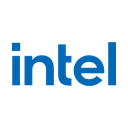

INTCNASDAQ · Intel Corporation
Fair value (blend propio)
$38.74
vs. $59.66 mercado · −35.1%
POSTURA DEL ANÁLISIS: VALUACIÓN EXIGENTE — LA ACCIÓN CAYÓ 41% DESDE LA EDICIÓN DE AGOSTO, PERO EL BLEND TAMBIÉN BAJÓ: TRES DE LOS CUATRO MÉTODOS SIGUEN MUY POR DEBAJO DEL PRECIO — Data Center creció 77.8% y el balance quedó con caja neta tras una colocación de $23 mil millones en acciones, pero la guía del cuarto trimestre cae 6.1% secuencial, la desaceleración de PC sigue al menos hasta mediados de 2027, Intel Foundry pierde $1.85 mil millones por trimestre y todavía no hay un cliente externo de escala anunciado para 14A (ver Sección 13)
Este documento es análisis independiente con fines informativos y educativos. El autor no es un asesor financiero registrado (no CFA / no matriculado ante la CNV/SEC) y este contenido no constituye una recomendación de compra, venta o mantenimiento para ningún lector en particular. Ver disclosure completo al pie.
Microprocesadores x86 (Client Computing and Physical AI, Data Center & AI) · Intel Foundry (fabricación de semiconductores para terceros) · Nodos de proceso 18A/14A
Intel reportó, el 29 de octubre de 2026, ingresos del tercer trimestre de $16.51 mil millones (+20.9% interanual),
con Data Center and AI en $7.32 mil millones (+77.8%, su mayor crecimiento en 15 años) y un margen operativo GAAP
de 15.3%. Pero el mercado leyó la guía: ingresos de $15.0–$16.0 mil millones para el cuarto trimestre (−6.1%
secuencial en el punto medio), margen bruto no-GAAP de 38.0% (contra 44.1%) y una desaceleración de PC que el CFO
ve "al menos hasta la primera mitad del año próximo". La acción cayó 28.6% al día siguiente (de $92.07 a $65.76)
y cerró el 13 de noviembre en $59.66, 41% por debajo de la edición de agosto y 37% por debajo de los $95 a los que
Intel colocó $23.0 mil millones en acciones nuevas el 12 de agosto. Esa colocación, más $54.0 mil millones de caja
e inversiones de corto plazo, deja a Intel con caja neta de $3.87 mil millones — y al revisarla
encontramos un error de la edición anterior: la deuda neta publicada ($37.66 mil millones) no restaba $16.85 mil
millones de inversiones de corto plazo; la cifra correcta al 27 de junio era de $20.81 mil millones (Sección 06).
El blend baja de $55.93 (agosto con la regla de pesos vigente) a $38.74.
Var. ingresos (últ. trim.)
+20.9%
Posición de caja neta
+$3.87B
01 — Resumen Ejecutivo
Un trimestre bueno, una guía floja y un balance rearmado con acciones nuevas
El 29 de octubre de 2026, Intel reportó ingresos del tercer trimestre (cerrado el 26 de septiembre) de $16.51 mil
millones, +20.9% interanual y +2.4% secuencial, por encima de su propia guía. El margen bruto GAAP subió a 43.0%
(44.1% no-GAAP) y la utilidad operativa GAAP a $2.52 mil millones (15.3%). Data Center and AI
facturó $7.32 mil millones, +77.8%, con un margen operativo de 41.5%; Client Computing and Physical
AI cayó 5.1% a $8.10 mil millones, y Intel Foundry llegó a un récord de $6.70 mil millones
(+58.1%, casi todo ventas a la propia Intel) con una pérdida operativa de $1.85 mil millones. El EPS GAAP fue de
$0.60 y el no-GAAP de $0.52; la diferencia viene, otra vez, de las acciones en garantía del gobierno de EE.UU.:
esta vez la acción bajó en el trimestre y la revaluación dejó una ganancia no-caja de $1.0 mil millones.
La guía del cuarto trimestre es la que movió el precio: ingresos de $15.0–$16.0 mil millones (punto medio $15.5 mil
millones, −6.1% secuencial y +13.4% interanual), margen bruto no-GAAP de 38.0% y EPS no-GAAP de $0.25 (contra $0.52).
El CFO, David Zinsner, dijo que la desaceleración de PC —con los precios de memoria empujando a los fabricantes a
recortar compras e inventario— sigue "al menos hasta la primera mitad del año próximo". La acción cayó 28.6% en la
sesión siguiente y cerró el 13 de noviembre de 2026 en $59.66: −41.0% desde los $101.06 de la edición de agosto.
El balance cambió de signo. El 12 de agosto de 2026 Intel colocó ~242 millones de acciones a $95 (ingreso bruto de
$23.0 mil millones) y en abril había recomprado por $14.2 mil millones el 49% que Apollo tenía en la fábrica de
Irlanda. Al 26 de septiembre, la caja más inversiones de corto plazo sumaba $54.0 mil millones contra $50.1 mil
millones de deuda: caja neta de $3.87 mil millones. La base de acciones diluidas creció 17.1%
interanual, a 5,307 millones. En la Sección 13 el blend da $38.74, 35.1% por debajo del precio: el
DCF Base ($22.90), los comparables ($30.01) y la reversión histórica ($14.68) quedan muy por debajo; solo el consenso
de 49 analistas ($90.65) queda por encima, y su calificación agregada sigue siendo "Hold".
02 — Historia y Evolución
De inventar el microprocesador comercial a pedirle un rescate de facto al gobierno de EE.UU.
Intel fue fundada en 1968 en Mountain View, California, por Robert Noyce y Gordon Moore (con Andy Grove como
tercer empleado clave), inicialmente como fabricante de memoria de semiconductores. El giro que definió a la
compañía llegó en 1971, con el Intel 4004, el primer microprocesador comercial del mundo. Durante más de cuatro
décadas, el modelo de "diseñar y fabricar todo en casa" (IDM) y el dominio del x86 en PCs y servidores convirtieron
a Intel en la semiconductora más grande del mundo por ingresos durante gran parte de los años 2000 y 2010.
Ese dominio se erosionó desde mediados de la década de 2010: retrasos en la transición a nodos más finos le
permitieron a TSMC y a Samsung cerrar la brecha tecnológica; Apple migró el Mac a diseño propio fabricado por TSMC;
AMD volvió a competir en x86; e Intel quedó casi ausente del ciclo de aceleradores de IA de 2023-2026. Los ingresos
cayeron de $79.0 mil millones en 2021 a $53.1 mil millones en 2024 y $52.9 mil millones en 2025. El TTM al 26 de
septiembre de 2026 suma $59.89 mil millones (+12.1% sobre el TTM de un año antes) y la guía lleva
2026 a ~$61.7 mil millones.
Ingresos anuales reportados, 2021–2025 (año calendario), más TTM al 26-sep-2026 y 2026 implícito por la guía (9M reales + punto medio del 4T). Fuente: SEC EDGAR XBRL y 8-K del 29-oct-2026.
Pat Gelsinger, que había vuelto como CEO en 2021 con el plan "IDM 2.0" (abrir las fábricas a clientes externos
mientras se recupera el liderazgo de proceso), fue reemplazado en marzo de 2025 por Lip-Bu Tan, ex-CEO de Cadence
Design Systems. Tan heredó un plan en marcha —18A entró en manufactura de alto volumen en octubre de 2025— pero sin
clientes externos de escala ni la caja para financiar sola la capacidad. La respuesta fue financiera: el acuerdo
con el gobierno de EE.UU. de agosto de 2025, las inversiones de NVIDIA y SoftBank, la recompra de la parte de Apollo
en Irlanda y la colocación de acciones de agosto de 2026.
03 — Modelo de Negocio y Segmentos
Dos negocios en uno: vender chips propios y fabricar (también) para terceros
Intel reporta tres segmentos operativos: Data Center and AI (DCAI) (Xeon y aceleradores),
Client Computing and Physical AI (CCPG) (procesadores Core para PCs y dispositivos con IA
embebida) —juntos forman "Intel Products"— e Intel Foundry, que opera las plantas y le vende obleas
sobre todo a Intel Products (ventas intersegmento) y, en menor medida, a clientes externos.
Ingresos por segmento reportado, 3T26 (antes de eliminaciones intersegmento), en miles de millones de USD.
El cambio de mezcla es fuerte: un año atrás, DCAI facturaba $4.12 mil millones contra $8.54 mil millones de Client;
ahora la brecha casi se cerró ($7.32 contra $8.10 mil millones) y DCAI ya genera más resultado operativo ($3.04 mil
millones) que Client ($2.29 mil millones). La demanda de CPU de servidor para cargas de inferencia y de agentes
—incluido un acuerdo plurianual con Oracle para Xeon y Diamond Rapids— explica el salto. Pero el dato estructural
sigue en Foundry: $6.70 mil millones de ingresos, casi todos de Intel misma, con una pérdida de $1.85 mil millones
(−27.7%) y $6.38 mil millones de pérdida acumulada en nueve meses. Mientras no aparezcan clientes externos de escala,
el capex récord sigue subsidiando la producción de los chips propios.
04 — Desarrollos Recientes y Perspectiva
Colocación de $23 mil millones, recompra de Irlanda, 14A sin cliente y una guía que decepcionó
Agosto de 2026: $23 mil millones en acciones nuevas a $95
El 12 de agosto de 2026 Intel completó una oferta pública de ~211 millones de acciones a $95, y los colocadores
ejercieron la opción por ~32 millones más: ~242 millones de acciones nuevas, $23.0 mil millones brutos ($22.62 mil
millones netos), "para financiar oportunidades de crecimiento manteniendo un balance fuerte y la calificación de
grado de inversión". Fue una dilución de ~4.8% sobre la base previa; el cierre del 13 de noviembre de 2026 ($59.66) quedó
37.2% por debajo de ese precio de colocación.
Abril de 2026: Intel recompra el 49% de Apollo en Irlanda
El 8 de abril de 2026 Intel volvió a comprar el 49% que Apollo tenía en Ireland SCIP (la sociedad dueña de la Fab 34)
por $14.2 mil millones en efectivo. Contablemente, $13.5 mil millones se restaron del capital pagado; en el flujo
de caja aparece como "distribuciones a socios" de $14.4 mil millones en nueve meses. Sigue vigente la sociedad de
Arizona con Brookfield (49%), que es la mayor parte de los $16.64 mil millones de interés minoritario del balance.
El gobierno de EE.UU., NVIDIA y SoftBank — sin cambios
El acuerdo del 22 de agosto de 2025 con el Departamento de Comercio ($8.9 mil millones por 433.3 millones de
acciones, parte en garantía que se libera con hitos del programa Secure Enclave) y las inversiones de NVIDIA ($5.0
mil millones a $23.28) y SoftBank ($2.0 mil millones) siguen como estaban. Al 26 de septiembre quedaban 132 millones
de acciones en garantía sin liberar y un pasivo derivado de $13.7 mil millones ($8.6 corrientes y $5.1 no
corrientes) que se cancela entregando acciones, no caja. En el tercer trimestre la acción de Intel bajó y la
revaluación dejó una ganancia de $1.0 mil millones (en nueve meses, una pérdida de $12.6 mil millones).
18A y 14A: el kit de diseño salió, el cliente no
18A está en manufactura de alto volumen desde octubre de 2025 con Panther Lake (Core Ultra Serie 3); la compañía
sigue citando los costos de arranque de Panther Lake como lastre del margen. En octubre de 2026 Intel liberó el
kit de diseño (PDK) 0.9 de 14A a clientes seleccionados, espera la versión 1.0 en el primer
trimestre de 2027 y compromisos de diseño de clientes en la primera mitad de 2027. No nombró a ningún cliente
externo: la meta de que Foundry llegue al punto de equilibrio a fines de 2027 no se repitió en los últimos cinco
trimestres. Sigue siendo la brecha central entre la narrativa del turnaround y lo verificable.
Lo que viene: PC débil, memoria cara y más capex
La guía del cuarto trimestre (ingresos $15.0–$16.0 mil millones, margen bruto GAAP 37.1% / no-GAAP 38.0%, EPS
$0.10 / $0.25) refleja una desaceleración de PC que la compañía extiende al menos a la primera mitad de 2027, con la
escasez de memoria, sustratos y helio como riesgos activos. La compañía dijo que el capex y los compromisos de
compra de componentes clave van a "aumentar significativamente en los próximos trimestres": los compromisos de
capex llegaron a $19.6 mil millones (desde $12.8 mil millones en diciembre) y, después del cierre del trimestre,
firmó dos acuerdos de abastecimiento de sustratos que requieren $5.3–$6.1 mil millones de financiamiento. En octubre
acordó comprar Classiq por ~$1.9 mil millones.
05 — Estados Financieros
El negocio operativo mejora — el TTM todavía arrastra la primera mitad del año
El margen operativo pasó de −23.1% en el primer trimestre a 11.1% y 15.3% en los dos siguientes, pero el TTM (2.9%)
sigue arrastrando el primer trimestre (cargos de reestructuración de $3.97 mil millones en nueve meses). La pérdida
neta TTM de $12.03 mil millones es, casi entera, la revaluación de las acciones en garantía del gobierno ($12.6 mil
millones de pérdida en nueve meses): no tiene efecto en caja. El EPS no-GAAP del tercer trimestre ($0.52) es la
lectura más limpia de la rentabilidad del trimestre — y la guía lo baja a $0.25 en el cuarto.
Margen bruto y margen operativo (GAAP) trimestral, 3T25 a 3T26. Fuente: SEC EDGAR XBRL / 8-K.
Ingresos totales trimestrales, 3T25 a 3T26, más el punto medio de la guía del 4T26 (miles de millones USD). Fuente: SEC EDGAR XBRL / 8-K.
06 — Deuda y Balance
De deuda neta a caja neta — y una corrección de la edición anterior
La posición financiera de Intel cambió en un trimestre: la colocación de $22.62 mil millones netos, $5.08 mil
millones de flujo operativo y $4.0 mil millones netos de deuda nueva ($13.0 emitidos, $9.0 cancelados en nueve
meses) llevaron la liquidez de $29.7 a $54.0 mil millones, contra $50.1 mil millones de deuda: caja neta de $3.87
mil millones. Para la valuación, esta edición resta además el interés minoritario ($16.64 mil
millones): los flujos consolidados incluyen la parte de Brookfield en las fábricas de Arizona, que no le pertenece
al accionista de Intel. La edición de agosto no lo restaba; sin ese ajuste, el DCF Base de esta edición daría
$26.04 en vez de $22.90.
07 — Flujo de Caja y Capital Allocation
Más de $20 mil millones de capex en 2026, y la compañía avisa que sube "significativamente"
Los márgenes de OCF trimestrales del TTM fueron de 31.4%, 8.1%, 43.4% y 30.8% — muy volátiles por capital de trabajo
y por cargos de reestructuración (el balance registra además $1.2 mil millones de depósitos de clientes para
asegurarse abastecimiento futuro). El promedio de nueve meses de 2026 es 28.5%. El DCF de la Sección 13
ancla el margen de OCF del año 1 del caso Base en 27%: por debajo de esos nueve meses porque la guía del cuarto
trimestre baja seis puntos de margen bruto y la compañía extiende la debilidad de PC a la primera mitad de 2027.
El capex bruto de nueve meses fue de $10.22 mil millones; para cumplir el piso de más de $20 mil millones del año
faltan ~$9.8 mil millones en el cuarto trimestre. Para 2027, la compañía no dio cifra: dijo que el capex y los
compromisos de compra "van a aumentar significativamente en los próximos trimestres" y que el presupuesto de 2027
se presenta en enero. El caso Base del DCF usa un capex de 36% de los ingresos en 2027 (~$24.9 mil millones) que baja
a 16% en 2031. Intel no paga dividendo y no recompra acciones.
Capex bruto de Intel: 2025 reportado, 9M 2026 reportado, piso de la guía 2026 (>$20B) y supuesto del caso Base para 2027 ($24.9B). 2027 no tiene cifra de la compañía. Fuente: 10-K, 10-Q y conference call del 29-oct-2026.
08 — Comparables de Industria
INTC frente al resto de la cadena de semiconductores — ninguno replica el mismo modelo híbrido
Ningún comparable público replica el modelo de Intel (diseño y fabricación propia de x86 más una fundición para
terceros en construcción). Usamos como panel formal a TSMC (el estándar de fundición) y GlobalFoundries (fundición
especializada de menor escala), y mostramos a AMD como referencia de contexto, no promediada. Los tres múltiplos son
sobre el EPS de consenso del año fiscal 2027.
P/E sobre el EPS de consenso 2027E. AMD es referencia de contexto y no entra al promedio del panel.
El panel de fundición se abarató fuerte desde agosto: TSMC pasó de ~24.9x a 17.6x y GlobalFoundries de ~44.4x a
16.0x (parte del cambio es metodológico: ahora se usa el EPS 2027 en ambos, y en agosto eran cifras aproximadas de
agregadores). Intel, en cambio, cotiza a 33.3x su EPS de 2027 — el doble que las fundiciones puras, pese a tener una
fundición que pierde dinero. Aplicarle a Intel el múltiplo del panel supone tratar a Intel Foundry como una fundición
rentable a la par de TSMC, algo que los datos todavía no muestran.
09 — Gobierno Corporativo y Estructura Accionaria
El gobierno de EE.UU., accionista de facto — con un tope de voto negociado
Gobierno de EE.UU.
~8.2% del capital actual
433.3M de acciones del acuerdo de ago-2025 sobre 5,310M en circulación (132M todavía en garantía). Voto delegado, sin asiento en el directorio.
Ownership institucional
~64.7%
BlackRock ~8.3%, Vanguard ~8.2%, State Street ~4.3% son los tres mayores accionistas institucionales (dato sep-2025, antes de la colocación de ago-2026).
Ownership insider
~4.3%
Incluye la participación de Lip-Bu Tan, quien debe invertir personalmente $25M en acciones de Intel como condición de su compensación.
CEO
Lip-Bu Tan
CEO desde el 18-mar-2025. Ex-CEO de Cadence Design Systems (2009-2021); fundador de Walden International.
Compensación CEO
Ligada a resultado
Estructura que podría superar $400M si Tan triplica el precio de la acción y supera al S&P 500 — sin ese resultado, la compensación es sustancialmente menor.
Otros inversores estratégicos
NVIDIA, SoftBank
$5.0B (NVIDIA, sep-2025, $23.28/acción) y $2.0B (SoftBank, sep-2025).
El gobierno de EE.UU. sigue siendo, de facto, uno de los accionistas más grandes, con un warrant a 5 años (a $20,
por otro 5%) que solo se activa si Intel vendiera más del 49% de su negocio de fundición — una cláusula que limita
las opciones estratégicas sobre Foundry. Ni el gobierno ni NVIDIA ni SoftBank tienen asiento en el directorio. En el
comunicado del 29 de octubre de 2026 la compañía informó el nombramiento de Dean Jarnac como vicepresidente
ejecutivo y director comercial.
10 — Registro de Riesgos
Qué podría cambiar esta lectura
11 — Catalizadores
Agenda de eventos relevantes
12 — Modelo Financiero Proyectado y Momentum de Estimados
Un trimestre por encima de la guía, un consenso que bajó para 2027
El tercer trimestre superó la guía que Intel había dado en julio (ingresos de $15.8–$16.8 mil millones, EPS no-GAAP
de $0.38): entregó $16.51 mil millones y $0.52. Lo que bajó es el año próximo: el consenso de EPS ajustado para
2027 pasó de $2.04 en agosto a $1.79 en noviembre (−12.3%), aunque el de 2026 casi no cambió ($1.52 → $1.49).
EPS ajustado de consenso para 2027: lectura de agosto vs. noviembre de 2026, y EPS no-GAAP del 3T26 guiado vs. reportado. Fuente: stockanalysis.com y 8-K oficiales.
49 analistas cubren la acción, con calificación de consenso "Hold", precio objetivo promedio de $90.65 y un rango de
$63 a $160: el objetivo más bajo del panel ($63) está apenas 5.6% por encima del precio de mercado. Igual que en
agosto, un precio objetivo promedio muy por encima del precio convive con una calificación "Hold" — el sell-side no
está convencido, y sus objetivos tardan en ajustar a una caída de 41% en tres meses.
13 — Valuación: Cuatro Métodos y el Fair Value
Cuánto vale la acción cuando se pesa la demanda futura — con el balance corregido
Llegamos a la valuación después de recorrer el negocio completo a propósito. Calculamos el valor razonable con
cuatro enfoques —flujo de caja descontado, múltiplos de comparables, reversión a la media histórica y consenso de
Wall Street— y los combinamos con los pesos fijos del desk (DCF 15%, comparables 25%, reversión 35%, consenso 25%).
Todos los números salen de un script (.claude/skills/informe-bigtech/modelos/intc/valuacion.py).
Qué cambió respecto de agosto. El script reproduce al centavo los tres escenarios publicados en
agosto ($5.23 / $23.91 / $80.46). Encontramos un error de balance: la deuda neta de $37.66 mil millones no restaba
$16.85 mil millones de inversiones de corto plazo; con la cifra correcta ($20.81 mil millones) el DCF Base de agosto
habría dado $27.21. Agosto publicó un promedio simple de $56.65; con los pesos vigentes, sus mismos métodos daban
$55.93. Esta edición da $38.74 (−30.8%): el consenso bajó de $115.27 a $90.65, los comparables de
$70.69 a $30.01 (el panel de fundición pasó de 34.65x a 16.8x y el EPS 2027 bajó) y el DCF Base de $23.91 a
$22.90.
Método 1 — Flujo de caja descontado (DCF), tres escenarios
Mismo modelo de dos etapas que agosto (cinco años explícitos más valor terminal), con el año 0 en el ingreso de
consenso para 2026 ($61.74 mil millones, que coincide con nueve meses reales más el punto medio del cuarto
trimestre) y el flujo de caja libre separado en margen de OCF menos capex sobre ingresos. Por la regla del desk de
sobreponderar la demanda futura en semiconductores, el crecimiento del año 1 se ancla en lo verificable hacia
adelante —el consenso de 2027 (+12.0%) y una guía que extiende la debilidad de PC a la primera mitad del año— y no en
el +20.9% del último trimestre. El margen de OCF se ancla en el flujo real: 29.2% TTM y 28.5% en los nueve meses de
2026. El WACC sube medio punto en los tres escenarios porque el Treasury a 10 años pasó de 4.62% (5 de agosto) a
5.15%. Del valor de empresa se resta la deuda neta (al 26-sep-2026, caja neta, que suma) y el interés minoritario.
El promedio simple de los tres escenarios da $31.08 y el valor esperado ponderado (25% Bear / 45% Base / 30% Bull),
$30.91. El caso Base ($22.90) queda 61.6% por debajo del precio, así que pasamos el chequeo de sesgo:
(1) el margen de OCF del año 1 (27%) está anclado en el OCF real (28.5% en nueve meses), apenas por
debajo por la guía del cuarto trimestre — correcto; (2) el capex del año 1 (~$24.9 mil millones)
surge de una guía que la propia compañía describe como en fuerte aumento sobre los más de $20 mil millones de 2026 —
correcto, y el Bear ya lo modera; (3) el ingreso base es consenso, no extrapolación propia —
correcto. El resultado es un hallazgo: con un capex de un tercio de los ingresos, el FCF del año 1 es negativo en los
tres escenarios, y el 91.8% del valor de empresa del Base viene del valor terminal — el modelo es
muy sensible y hay que leerlo con cautela. Para que el DCF Base llegue a $59.66 haría falta un margen de OCF plano
de 51.1% todos los años (contra 29.2% real TTM).
Sensibilidad del caso Base: WACC × crecimiento terminal
La celda marcada reproduce el caso Base ($22.90, WACC 11.0%, g 3.0%).
Método 2 — Múltiplos de comparables
Aplicamos el P/E 2027E promedio del panel de fundición (TSM 17.6x y GFS 16.0x; promedio 16.8x) sobre el EPS de
consenso 2027 de Intel ($1.79).
Tomamos $30.01 como resultado formal. En agosto este método daba $70.69 y era el más generoso de los propios; la
caída viene de un panel mucho más barato (sobre todo GFS) y de un EPS 2027 12.3% menor. Ni siquiera el múltiplo de
AMD —un negocio con crecimiento de IA que Intel no tiene— alcanza el precio actual.
Método 3 — Reversión a la media histórica propia
El historial de P/E de Intel sigue siendo el más contaminado de la cobertura: promedios de 5 y 10 años de entre ~60x
y ~220x según la fuente, producto de dividir un precio estable por ganancias casi nulas o negativas. La ventana de
los últimos cuatro cierres de trimestre tampoco sirve: el EPS GAAP TTM fue negativo en los cuatro (−$0.09, −$0.63,
−$2.12 y −$2.42). Mantenemos el estadístico de agosto: el P/E mediana 2021-2025 de 8.2x, aplicado
al EPS de consenso 2027.
Resultado: $14.68 (agosto: $16.73, con el EPS 2027 de entonces). Es el número más bajo de los
cuatro y un recordatorio de que, aun en los años con utilidad, el mercado rara vez le pagó a Intel un múltiplo
generoso: el precio actual depende más de la narrativa del turnaround que del historial de rentabilidad.
Método 4 — Consenso de Wall Street
El consenso (+51.9% sobre el precio) es el único método por encima del mercado, con calificación "Hold". Es probable
que parte de esos objetivos todavía no refleje la caída posterior al reporte: el promedio bajó de $115.27 a $90.65
en tres meses, menos que la acción.
Síntesis: los cuatro métodos, uno al lado del otro
"Football field" de valuación — rango bajo/alto de cada metodología. La línea roja marca el precio de mercado ($59.66); la azul, el blend ponderado ($38.74).
El blend ponderado da $38.74 por acción, 35.1% por debajo del precio de $59.66 (en agosto, −43.9%).
Sin el consenso daría $21.43. La brecha se achicó porque la acción cayó más (−41.0%) que el valor estimado (−30.8%).
El turnaround operativo sigue siendo real —margen operativo de 15.3%, DCAI +77.8%, un balance que ya no tiene deuda
neta—, pero los tres métodos propios coinciden en que el precio todavía paga por algo que no está en los números:
que Intel Foundry consiga clientes externos de escala y deje de perder casi $2 mil millones por trimestre. El precio
también incorpora la opcionalidad del respaldo del gobierno de EE.UU., de NVIDIA y de SoftBank. La postura no
cambia: valuación exigente, sin rechazo a la tesis del turnaround.
14 — Limitaciones del Modelo
Qué asume este análisis, y dónde puede fallar
El rango del DCF va de $10.10 a $60.25 y el 91.8% del valor de empresa del caso Base viene del valor terminal:
con un capex de un tercio de los ingresos, los primeros años aportan FCF negativo o chico, y todo el valor depende
de que el capex baje a 16% de los ingresos hacia 2031. Intel todavía no dio una cifra de capex para 2027; si la
de enero supera los ~$25 mil millones del caso Base, el resultado baja. El margen de OCF está anclado en el OCF
real de nueve meses (28.5%), pero los trimestres van de 8.1% a 43.4% por capital de trabajo. Esta edición resta el interés minoritario ($16.64 mil millones) del valor de empresa y corrige la
deuda neta de agosto, que no restaba las inversiones de corto plazo: son dos cambios metodológicos que mueven el
DCF en sentidos opuestos (sin el minoritario, el Base daría $26.04). El pasivo derivado de las acciones en
garantía ($13.7 mil millones) se cancela con acciones y no se resta del valor de empresa. El Método 3 usa la
mediana histórica y el EPS forward porque el EPS TTM es negativo: es una decisión propia frente a un caso sin
precedente en la cobertura. El Método 2 supone que el mercado le reconoce a Intel un múltiplo de fundición
rentable, algo que Foundry todavía no muestra. Los datos de ownership institucional son previos a la colocación
de agosto de 2026. Finalmente, ningún método cuantifica la probabilidad de que Intel consiga un cliente externo
de escala para 14A: es la variable cualitativa más importante para la tesis de largo plazo.
Documento elaborado a partir de fuentes públicas: SEC EDGAR (Form 8-K Exhibit 99.1, 10-Q, 10-K, XBRL companyfacts
API), comunicados de resultados y conference calls de Intel Corporation, S&P Global Market Intelligence,
stockanalysis.com, fullratio.com, financecharts.com, wisesheets.io, WallStreetZen, Business Quant, Fintel, Farient
Advisors, Yahoo Finance y prensa financiera especializada. Cifras fundamentales con fecha de corte en el Form 8-K
(29-oct-2026) y 10-Q (30-oct-2026) de Intel correspondientes al trimestre cerrado el 26 de septiembre de 2026; precio
de mercado, rango de 52 semanas, Treasury a 10 años, tipo de cambio NT$/USD y precios de comparables al cierre del
13 de noviembre de 2026; consenso al 15 de noviembre de 2026.
Sobre el autor y la naturaleza de este documento: este informe es un análisis independiente
elaborado por Manfredi Investment Research & Markets con fines exclusivamente informativos y educativos. El
autor no es un asesor de inversión registrado, no está matriculado ante la Comisión Nacional de Valores (CNV), la
SEC, ni ningún otro organismo regulador equivalente, y no mantiene una relación de asesoramiento financiero
personalizado con el lector. Ninguna cifra de este documento —incluido el "fair value" de portada, los escenarios
de DCF, ni la síntesis de la Sección 13— constituye una recomendación de compra, venta o mantenimiento para ningún
lector en particular, ni considera la situación financiera, los objetivos o el perfil de riesgo individual de
quien lo lee. Los escenarios de DCF son estimaciones propias sujetas a los supuestos declarados explícitamente en
la Sección 13, y no representan guidance oficial de ninguna de las compañías mencionadas salvo donde se cita de
forma directa y atribuida. Verificar cifras contra el 10-Q/10-K/8-K más reciente de la compañía, y consultar a un
asesor financiero matriculado, antes de tomar cualquier decisión de inversión.